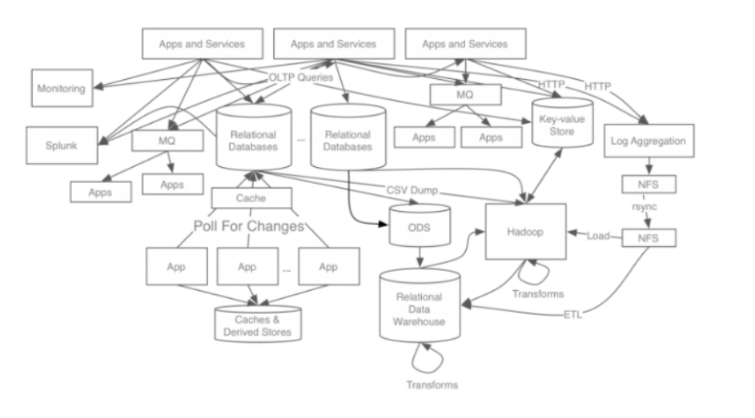
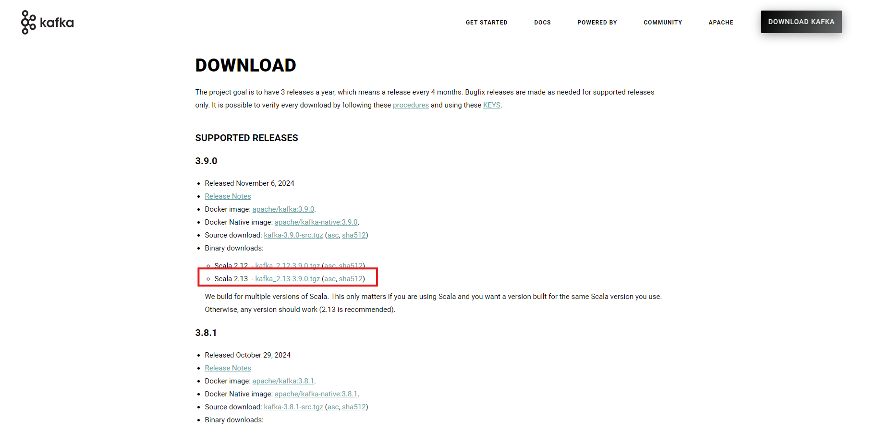
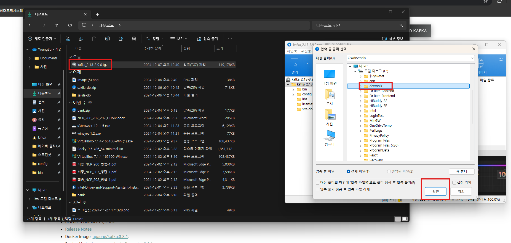
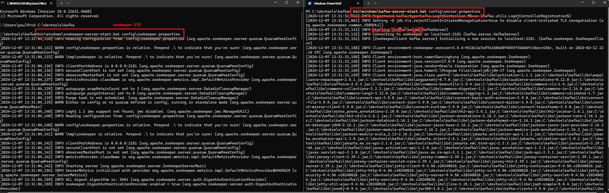
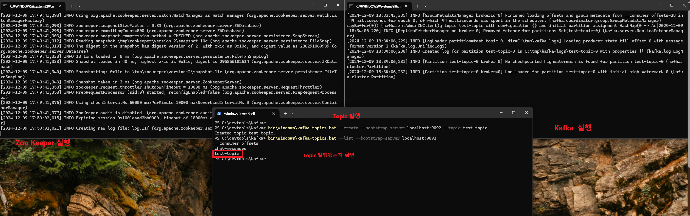
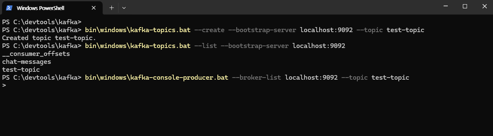
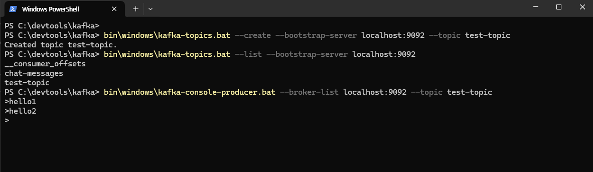
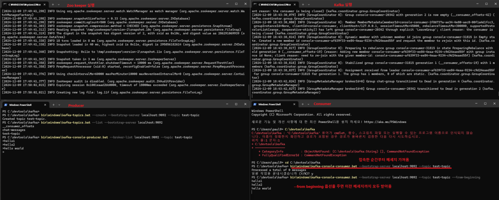

Kafka란?
카프카(Apache Kafka)는 분산 메시징 시스템으로, 대규모 데이터 스트림을 처리하고 실시간으로 데이터를 전달하는 데 사용되는 오픈소스 플랫폼이야. 주로 로그 수집, 이벤트 스트리밍, 실시간 데이터 처리 등에서 활용된다.
pub-sub 모델의 메세지 큐 형태로 동작하며 분산환경에 특화되어 있다.
등장 배경
다음은 카프카 개발 전 링크드인의 데이터 처리 시스템이다.

카프카 설치


- 아무 폴더에 압축 풀기
- ⭐ 이때 폴더 이름이
kafka_2.13-3.9.0이렇게 나오는데 경로가 너무 길다고 억까를 시전한다.kafka로 폴더명을 바꿔주도록 하자
Kafka 실행
- kafka 경로로 가서 다음의 명령어 실행
- 먼저 zookeeper부터 실행을 해줘야 한다.
- Zookeeper 실행
bin\windows\zookeeper-server-start.bat config\zookeeper.properties - Kafka 실행
bin\windows\kafka-server-start.bat config\server.properties
- 정상적으로 실행된 모습

Kafka Topic 생성하기
# kafka topic 생성하기
# bin\windows\kafka-topics.bat --create --bootstrap-server 카프카 접속주소:카프카 포트 --topic 카프카 토픽이름
ex)
bin\windows\kafka-topics.bat --create --bootstrap-server localhost:9092 --topic test-topic
# kafka topic 생성확인
# bin\windows\kafka-topics.bat --list --bootstrap-server 카프카 접속주소:카프카 포트
ex)
bin\windows\kafka-topics.bat --list --bootstrap-server localhost:9092
생성된 Topic에 Message 보내기(Producer)
Topic을 만든 Powershell에서 진행해도 무방합니다.
# Producer 생성 예시
# bin\windows\kafka-console-producer.bat --broker-list 카프카 접속주소:카프카 포트 --topic 카프카 토픽이름
ex)
bin\windows\kafka-console-producer.bat --broker-list localhost:9092 --topic test-topic
- producer가 되면 > 가 생긴다. 메세지를 입력하면 토픽으로 전송된다.

Topic에서 Message 가져오기(Consumer)
# Consumer 생성 예시
# bin\windows\kafka-console-consumer.bat --bootstrap-server 카프카 접속주소:카프카 포트 --topic 카프카 토픽이름
ex)
bin\windows\kafka-console-consumer.bat --bootstrap-server localhost:9092 --topic test-topic
bin\windows\kafka-console-consumer.bat --bootstrap-server localhost:9092 --topic test-topic --from-beginning- 실행 결과
